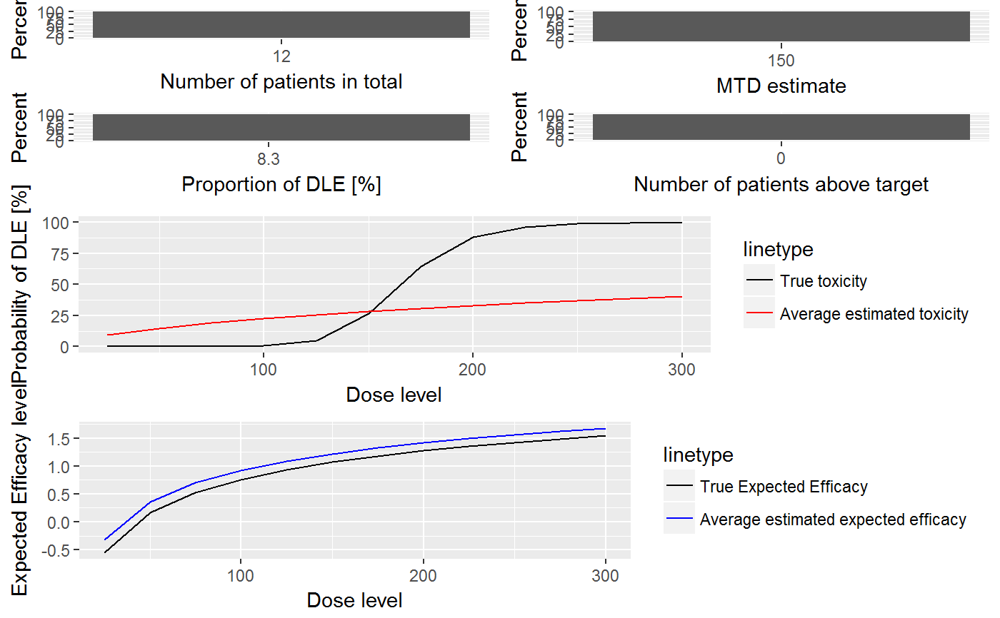

R/Simulations-methods.R
plot-PseudoDualSimulationsSummary-missing-method.RdThis plot method can be applied to PseudoDualSimulationsSummary objects in order
to summarize them graphically. Possible type of plots at the moment are those listed in
plot,PseudoSimulationsSummary,missing-method plus:
You can specify any subset of these in the type argument.
# S4 method for PseudoDualSimulationsSummary,missing plot(x, y, type = c("nObs", "doseSelected", "propDLE", "nAboveTargetEndOfTrial", "meanFit", "meanEffFit"), ...)
| x | the |
|---|---|
| y | missing |
| type | the types of plots you want to obtain. |
| … | not used |
A single ggplot object if a single plot is
asked for, otherwise a gridExtra{gTree} object.
##obtain the plot of the summary for the simulation results ##If DLE and efficacy responses are considered in the simulations ##Specified your simulations when no samples are used ## we need a data object with doses >= 1: data <- DataDual(doseGrid=seq(25,300,25),placebo=FALSE) ##First for the DLE model ##The DLE model must be of 'ModelTox' (e.g 'LogisticIndepBeta') class DLEmodel <- LogisticIndepBeta(binDLE=c(1.05,1.8), DLEweights=c(3,3), DLEdose=c(25,300), data=data) ##The efficacy model of 'ModelEff' (e.g 'Effloglog') class Effmodel<-Effloglog(Eff=c(1.223,2.513),Effdose=c(25,300), nu=c(a=1,b=0.025),data=data,c=0) ##The escalation rule using the 'NextBestMaxGain' class mynextbest<-NextBestMaxGain(DLEDuringTrialtarget=0.35, DLEEndOfTrialtarget=0.3) ##The increments (see Increments class examples) ## 200% allowable increase for dose below 300 and 200% increase for dose above 300 myIncrements<-IncrementsRelative(intervals=c(25,300), increments=c(2,2)) ##cohort size of 3 mySize<-CohortSizeConst(size=3) ##Stop only when 10 subjects are treated (for illustration) myStopping <- StoppingMinPatients(nPatients=10) ##Now specified the design with all the above information and starting with a dose of 25 ##Specified the design(for details please refer to the 'DualResponsesDesign' example) design <- DualResponsesDesign(nextBest=mynextbest, model=DLEmodel, Effmodel=Effmodel, stopping=myStopping, increments=myIncrements, cohortSize=mySize, data=data,startingDose=25) ##Specify the true DLE and efficacy curves myTruthDLE<- function(dose) { DLEmodel@prob(dose, phi1=-53.66584, phi2=10.50499) } myTruthEff<- function(dose) {Effmodel@ExpEff(dose,theta1=-4.818429,theta2=3.653058) } ## Then specified the simulations and generate the trial ##For illustration purpose only 1 simulation is produced (nsim=1). mySim <-simulate(object=design, args=NULL, trueDLE=myTruthDLE, trueEff=myTruthEff, trueNu=1/0.025, nsim=1, ## this would need to be increased in the real ## application: mcmcOptions=McmcOptions(burnin=10, step=1, samples=50), seed=819, parallel=FALSE) ##Then produce a summary of your simulations MYSUM <- summary(mySim, trueDLE=myTruthDLE, trueEff=myTruthEff) ##Then plot the summary of the simulations print(plot(MYSUM))##If DLE and efficacy samples are involved ##Please refer to design-method 'simulate DualResponsesSamplesDesign' examples for details ##specified the next best mynextbest<-NextBestMaxGainSamples(DLEDuringTrialtarget=0.35, DLEEndOfTrialtarget=0.3, TDderive=function(TDsamples){ quantile(TDsamples,prob=0.3)}, Gstarderive=function(Gstarsamples){ quantile(Gstarsamples,prob=0.5)}) ##specified the design design <- DualResponsesSamplesDesign(nextBest=mynextbest, cohortSize=mySize, startingDose=25, model=DLEmodel, Effmodel=Effmodel, data=data, stopping=myStopping, increments=myIncrements) ##options for MCMC ##for illustration purpose we use 10 burn-in and generate 50 samples options<-McmcOptions(burnin=10,step=2,samples=50) ##The simulations ##For illustration purpose only 1 simulation is produced (nsim=1). # mySim<-simulate(design, # args=NULL, # trueDLE=myTruthDLE, # trueEff=myTruthEff, # trueNu=1/0.025, # nsim=1, # mcmcOptions=options, # seed=819, # parallel=FALSE) # # ##Then produce a summary of your simulations # MYSUM <- summary(mySim, # trueDLE=myTruthDLE, # trueEff=myTruthEff) # # ##Then plot the summary of the simulations # print(plot(MYSUM)) ##OR if the 'EffFlexi' class is used ## for the efficacy model Effmodel<- EffFlexi(Eff=c(1.223, 2.513),Effdose=c(25,300), sigma2=c(a=0.1,b=0.1),sigma2betaW=c(a=20,b=50),smooth="RW2",data=data) ##Specified the design design <- DualResponsesSamplesDesign(nextBest=mynextbest, cohortSize=mySize, startingDose=25, model=DLEmodel, Effmodel=Effmodel, data=data, stopping=myStopping, increments=myIncrements) ##specified the true DLE curve and the true expected efficacy values at all dose levels myTruthDLE<- function(dose) { DLEmodel@prob(dose, phi1=-53.66584, phi2=10.50499) } myTruthEff<- c(-0.5478867, 0.1645417, 0.5248031, 0.7604467, 0.9333009 ,1.0687031, 1.1793942 , 1.2726408 , 1.3529598 , 1.4233411 , 1.4858613 , 1.5420182) ##The true gain curve can also be seen myTruthGain <- function(dose) {return((myTruthEff(dose))/(1+(myTruthDLE(dose)/(1-myTruthDLE(dose)))))} ##The simulations # ##For illustration purpose only 1 simulation is produced (nsim=1). # mySim<-simulate(object=design, # args=NULL, # trueDLE=myTruthDLE, # trueEff=myTruthEff, # trueSigma2=0.025, # trueSigma2betaW=1, # nsim=1, # mcmcOptions=options, # seed=819, # parallel=FALSE) # ##Then produce a summary of your simulations # MYSUM <- summary(mySim, # trueDLE=myTruthDLE, # trueEff=myTruthEff) # # ##Then plot the summary of the simulations # print(plot(MYSUM))